Understand
Explore which ISO requirements relate to your business activities and goals.
We provide ISO training and consultancy across different management system standards, from understanding the requirements to setting up and improving the system. ThryveMS is our developing digital QMS solution.
How our work connects
Learning, training and consultancy can support different stages of the work. ThryveMS is our developing digital QMS solution.
Explore which ISO requirements relate to your business activities and goals.
Develop the knowledge your people need for their responsibilities.
Assess gaps, organize processes and prepare the management system.
Keep the work connected; explore ThryveMS for ISO 9001-focused QMS work.
Understanding ISO
Different standards address different areas of a business. The right starting point depends on your operations, customer or regulatory requirements, and what you want to improve. You do not need to pick a course or consultancy service before understanding the options.
Consider your products, services, sites and daily operations. A food manufacturer and an IT service provider may need to consider different standards.
Quality, worker safety, environmental performance, food safety or information security can point you toward different management-system topics.
Check what your customers, contracts and applicable regulations expect. An ISO standard is not automatically mandatory just because you belong to an industry.
WHAT WE DO
Plain-language explanations of ISO standards and how they relate to your type of business.
ISO awareness, requirements, internal auditor and implementation programs across seven subject areas.
Consultancy across the same ISO standards, including assessment, implementation and audit preparation.
Training & consultancy
The same subject areas are available for both training and consultancy. Training develops your team's knowledge. Consultancy helps your organization assess, implement and improve its management system. Open a category to see the subjects and services.
Quality management systems for processes, customer requirements and continual improvement.
QMS gap assessment, process and document implementation, internal audit preparation, management review and certification readiness.
Enquiry information →Environmental management, impacts, controls and improvement.
Environmental management assessment, aspects and impacts, process and documentation support, internal audit preparation and readiness guidance.
Enquiry information →Workplace health, safety risks and preventive management.
Safety management assessment, hazard and risk processes, documentation, investigation and corrective-action support, and audit preparation.
Enquiry information →Information security, privacy, IT service management and responsible AI governance.
Support for information security, privacy, IT service and AI management-system assessments, policies, risk controls, implementation and relevant audit preparation.
Enquiry information →Food safety management across the food supply chain.
Food safety management assessments, hazard analysis, relevant HACCP practices, documentation, implementation and audit preparation.
Enquiry information →Continuity, risk guidance, anti-bribery, compliance and energy management.
Consultancy relating to continuity plans, risk frameworks, compliance and anti-bribery processes and energy management. Scope and any assessment/certification pathway depend on the selected standard.
Enquiry information →Specialized standards for organizations with sector-specific needs.
Specialist consultancy for relevant sector requirements, assessments, implementation, documentation and audit or accreditation preparation as applicable. Qualified specialists and project scope must be confirmed.
Enquiry information →04 · SOLUTIONS

ThryveMS is being developed to connect documents, processes, audits, evidence and corrective actions for ISO 9001-focused quality management.
Illustrative plans; confirm prices and availability before subscribing. Estimate your cost →
HOW WE WORK WITH YOU
Learn what the standard asks of you, in plain language.
Build skills across your team, from awareness to internal audit.
Design processes, documents and controls with our consultants.
Maintain and improve the system; use ThryveMS where suitable once deployed.
Training options
Program coverage, dates and delivery options depend on the course and what has been confirmed.
Programs for one organization, with company-specific examples and objectives. On-site, virtual or hybrid arrangements can be discussed.
Scheduled courses for individual professionals or small groups. Enrollment, fees and course dates are provided only when confirmed.
Document control, risk assessment, root cause analysis, process mapping, audit preparation and other applied topics based on the selected standard.
Course schedules and registration are not yet published. Browse the training areas →
ABOUT US
Thync & Thryve provides learning, training and consultancy for organizations implementing or improving management systems. The same ISO areas are covered in both training and consultancy, with the work adapted to the organization’s requirements.
ThryveMS is our developing digital QMS product, initially focused on ISO 9001. It supports the company’s wider services but is a separate software offering.
Explore our services →Start with the ISO topic or challenge you want to discuss. Our training and consultancy scopes depend on your organization, and ThryveMS walkthroughs cover the current product preview.